# Anthem
Nmap
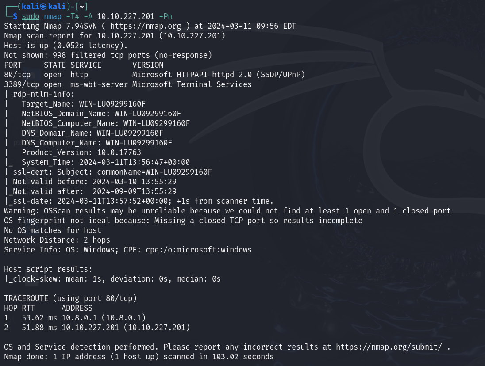
Web
robots.txt

Umbraco login

Dominio


Flags
 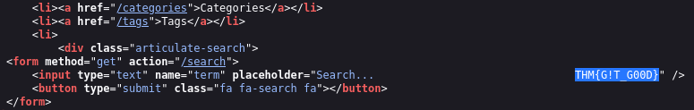
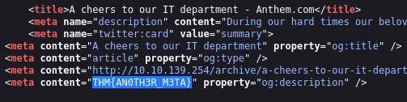
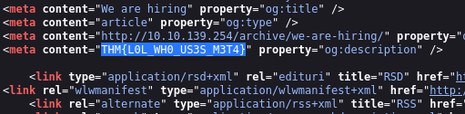
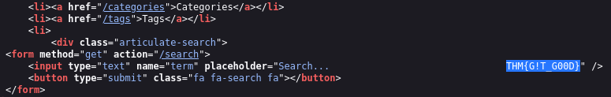
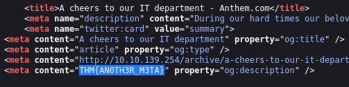
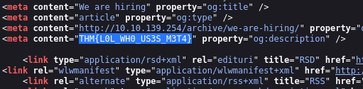
Pasos Finales
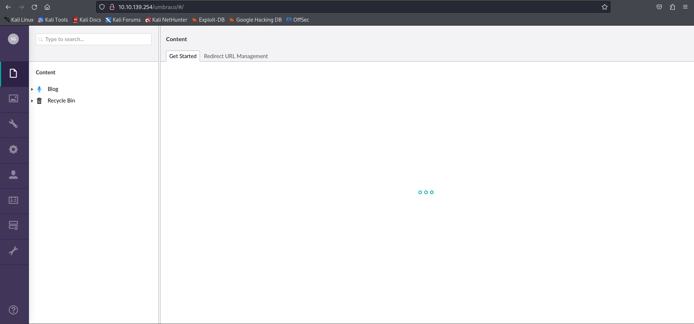Acceso RDP
rdesktop -u SD 10.10.139.254Usamos la contraseña encontrada antes
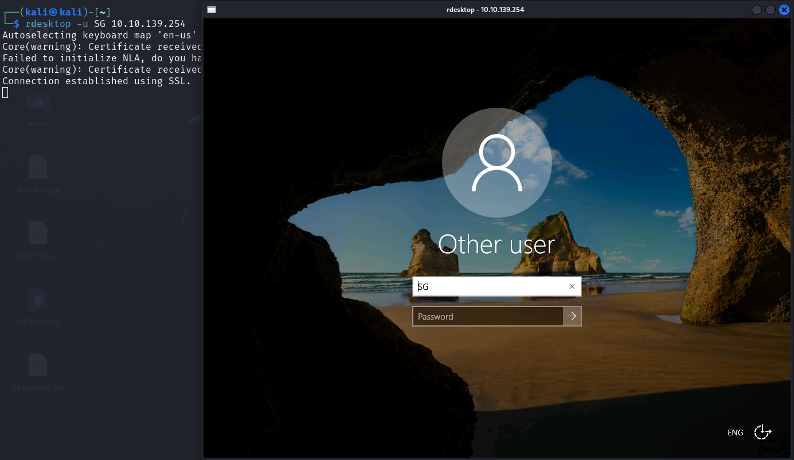Contenido de User.txt

Miramos los archivos ocultos del sistema, encontramos la carpeta backup
Le damos permisos a los usuarios del sistema al archivo
 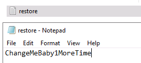
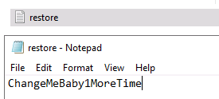
Accedemos al usuario administrador y vemos el contenido de root.txt

Para ganar acceso de otra manera podríamos ejecutar windows-exploit-suggester.py y ver los CVE críticos del sistema